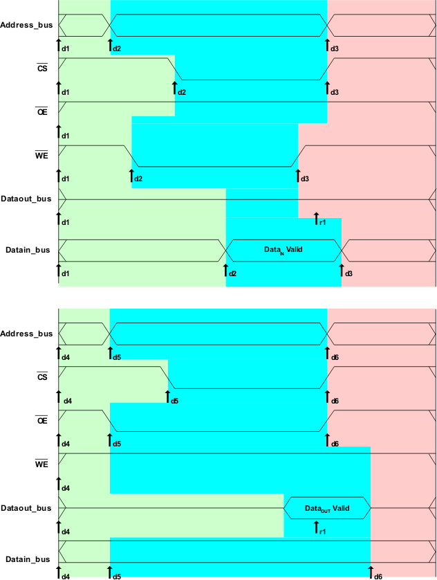
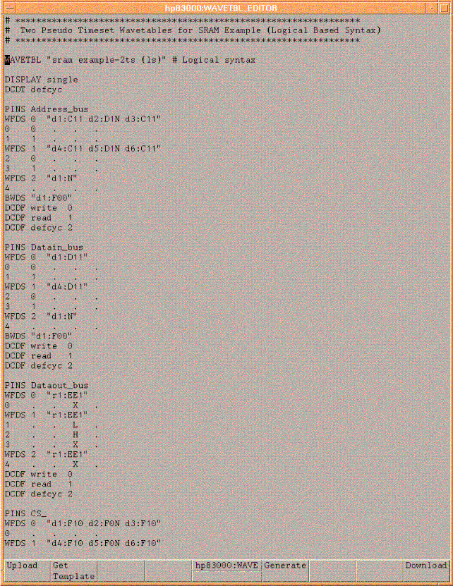
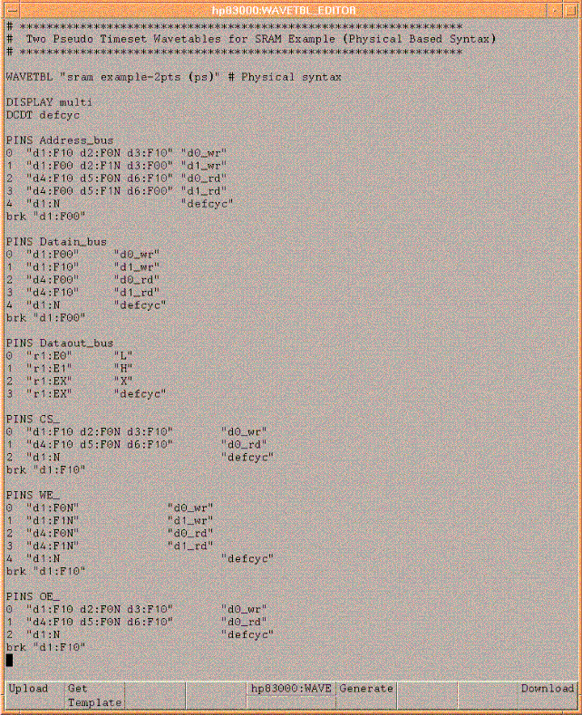
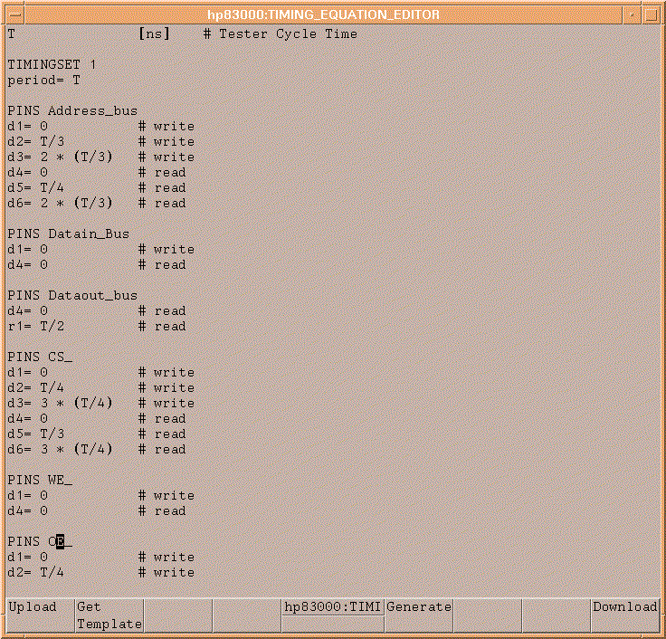
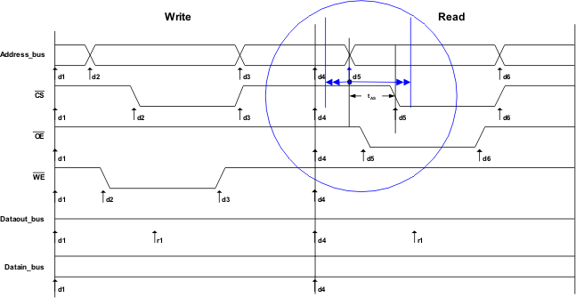

Read and Write timing edges
As previously mentioned the V93000 test system has 8 drive edges and 8 receive edges available on each pin. In this discussion we will only cover the drive edges. The timing requirements of the example SRAM device are fairly simple. In reviewing the example waveforms it can be seen that at most 3 drive edges have been used on any pin. This of course means that 5 drive edges are not being used. For these situations it is possible to create two pseudo time sets which can be switched between on the fly as the pattern is executing. For the SRAM device it makes sense to create two pseudo time sets, one for write timing and one for read timing. So at most we will need to use 6 drive edges on any pin. To provide for the most functionality it makes sense to select the edges so that as many edges with tri-state changing capability are used as possible. The figure below shows the numbering of the test system edges for the write and read cycle.

From the figure above, the drive edges d1-d6 and the receive edge r1 are used with the following convention:
Edge |
Usage convention |
|---|---|
d1 |
During a write cycle, either of the following uses:
|
d2 |
During a write cycle, either of the following uses:
|
d3 |
During a write cycle, either of the following uses:
|
d4 |
During a read cycle, either of the following uses:
|
d5 |
During a read cycle, either of the following uses:
|
d6 |
During a read cycle, either of the following uses:
|
r1 |
Strobe capture and comparison of data bus states during a read cycle |
Equation based wavetable and equation set definitions in the example shown above are shown in the figures below.



Using the channel's drive edges in this manner increases the complexity of the wavetable and equation set definitions and uses more of the timing system resources. The advantage is that a great deal of flexibility is available in setting up the timing for a read operation and a write operation. With the separation of the edges into pseudo timing sets it is possible to perform timing parameter measurements that pertain to one operation. For instance it is possible to determine the address setup time for just the read operation or the write operation. This is demonstrated in the figure below by measuring the address setup time tAS for just the read operation. This is accomplished with a sweep in time of edge d5 of the pins on the address bus during the read cycle. If the sweep range is appropriately sized a Passing/Failing test boundary will indicate the measured value of the parameter for the device.
